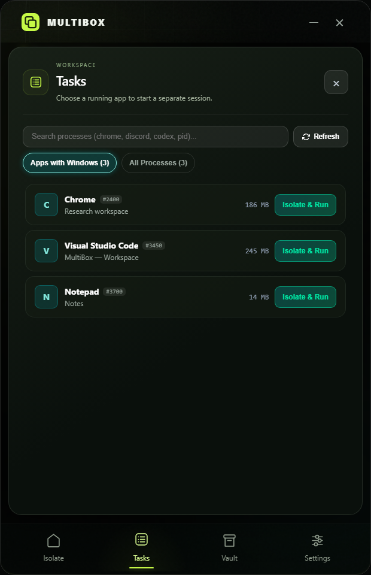
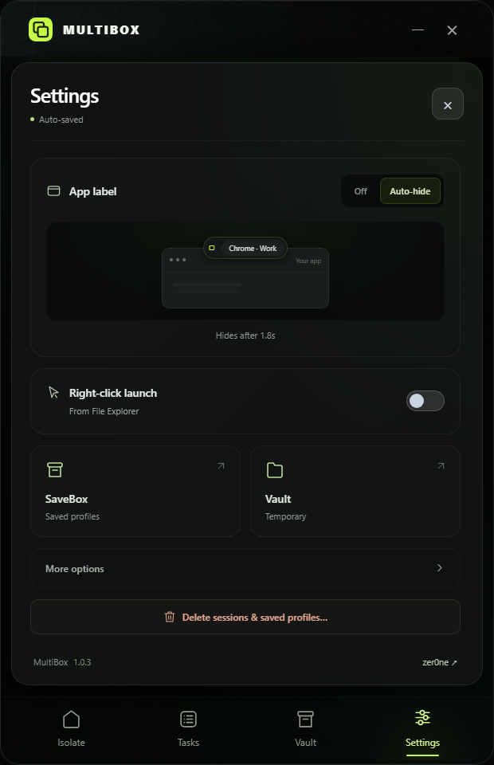

<!doctype html>
<html lang="en">
<meta charset="utf-8">
<meta name="viewport" content="width=device-width, initial-scale=1">
<title>MultiBox · Sliding panels & Vault</title>
<style>
  *{box-sizing:border-box}body{margin:0;padding:30px 34px;background:radial-gradient(ellipse at 50% 100%,#192615,transparent 70%),#080c0a;color:#e9efe6;font:14px 'Segoe UI',sans-serif}header{display:flex;justify-content:space-between;align-items:center;margin-bottom:22px}h1{display:flex;align-items:center;gap:12px;font-size:20px;font-weight:600;letter-spacing:-.5px;margin:0}h1 img{width:32px;height:32px}header p{margin:0;color:#91a08e;font-size:12px}main{display:grid;grid-template-columns:repeat(4,minmax(0,1fr));gap:25px}figure{margin:0}figcaption{font-size:10px;letter-spacing:2px;color:#9eac97;margin-bottom:12px}figcaption span{color:#c6fa46;margin-right:7px}figure img{width:100%;display:block;border-radius:15px;box-shadow:0 18px 35px #0005}footer{margin-top:21px;font-size:11px;color:#6e806c} @media(max-width:800px){main{grid-template-columns:repeat(2,minmax(0,1fr))}header p{display:none}}
</style>
<header><h1>MultiBox / Everything in its place.</h1><p>Sliding panels · clearer Vault · a sharper icon</p></header>
<main>
  <figure><figcaption><span>01</span> TASKS</figcaption></figure>
  <figure><figcaption><span>02</span> CURRENT SESSION</figcaption></figure>
  <figure><figcaption><span>03</span> SAVED PROFILES</figcaption></figure>
  <figure><figcaption><span>04</span> SETTINGS</figcaption></figure>
</main>
<footer>Preview uses sample processes and saved profiles. The app keeps your current session separate from saved copies.</footer>
</html>
